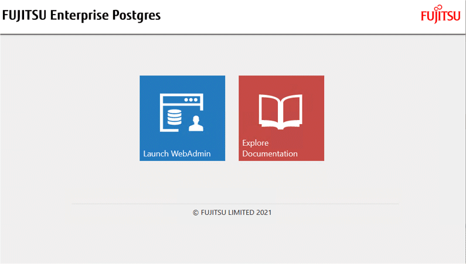
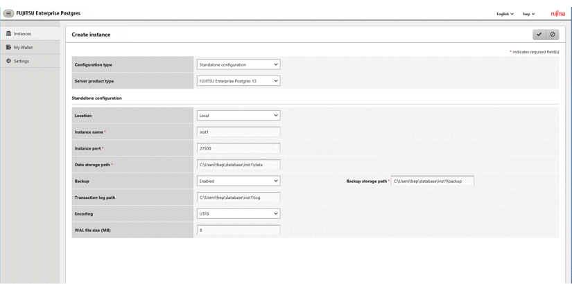
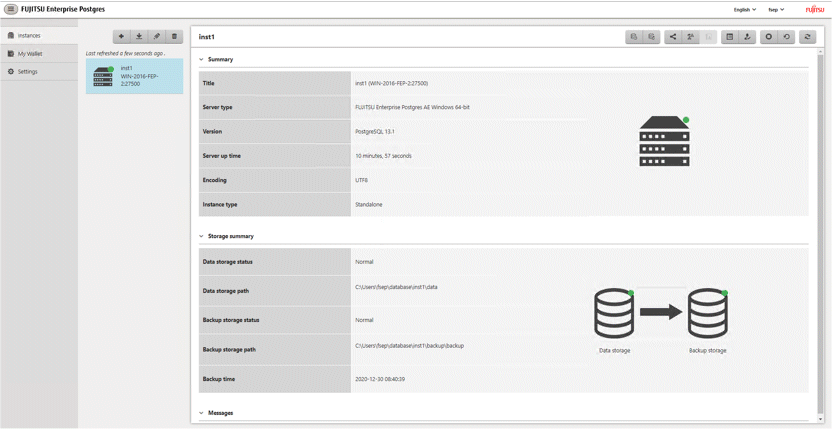

This section describes how to create an instance using WebAdmin.
WebAdmin must be set up correctly before it can be used. Refer to "B.1 Setting Up WebAdmin" for details. Additionally, if WebAdmin needs to be configured to use an external repository database, refer to "B.3 Using an External Repository for WebAdmin" for details.
It is recommended to use the following browsers with WebAdmin:
Internet Explorer 11
Microsoft Edge (Build41 or later)
WebAdmin will work with other browsers, such as Firefox and Chrome, however, the look and feel may be slightly different.
Configure your browser to allow cookies and pop-up requests from the server on which FUJITSU Enterprise Postgres is installed.
Refer to "Appendix A Recommended WebAdmin Environments" for information on how to change the pop-up request settings and other recommended settings.
Note
WebAdmin does not run in Windows(R) safe mode.
If the same instance is operated from multiple WebAdmin windows, it will not work correctly.
If the same instance is operated from multiple WebAdmin versions, it will not work correctly. Always use the latest version of WebAdmin for instance operations.
For efficient use of WebAdmin, it is recommended not to use the browser [Back] and [Forward] navigation buttons, the [Refresh] button, and context-sensitive menus, including equivalent keyboard shortcuts.
Copying and pasting the WebAdmin URLs are not supported. Additionally, bookmarking of WebAdmin URLs is not supported.
It is recommended to match the language between the instance server locale and WebAdmin.
WebAdmin supports only two languages: English and Japanese.
It is recommended to change the WebAdmin language setting from the instance details page only.
It is recommended to operate WebAdmin using the WebAdmin launcher.
WebAdmin uses the labels "Data storage path", "Backup storage path" and "Transaction log path" to indicate "data storage destination", "backup data storage destination" and "transaction log storage destination" respectively. In this manual these terms are used interchangeably.
If the browser was not operated for a fixed period (about 30 minutes), the session will time out and the login page will be displayed again for the next operation.
Port access permissions
If a port is blocked (access permissions have not been granted) by a firewall, enable use of the port by granting access. Refer to the vendor document for information on how to grant port access permissions.
Consider the security risks carefully when opening ports.
When creating or importing an instance in WebAdmin, set the log_directory parameter in postgresql.conf in the following format:
log_directory='userProfileFolder\\localSettingsFolder\\Fujitsu\\fsep_version\\instanceNamePortNumber\\log'
Example: userProfileFolder\\localSettingsFolder will be C:\\Users\\userName\\AppData\\Local.
This section describes how to log in to WebAdmin.
Startup URL for WebAdmin
In the browser address bar, type the startup URL of the WebAdmin window in the following format:
http://hostNameOrIpAddress:portNumber/
hostNameOrIpAddress: Host name or IP address of the server where WebAdmin is installed
portNumber: Port number of WebAdmin. The default port number is 27515.
For a server with IP address "192.0.2.0" and port number "27515":
http://192.0.2.0:27515/
The startup URL window shown below is displayed. From this window you can log in to WebAdmin or access the product documentation.

Logging in to WebAdmin
Click [Launch WebAdmin] in the startup URL window to start WebAdmin and display the login window. Enter the instance administrator user name (operating system user account name) and password, and log in to WebAdmin. User credential (instance administrator user ID and password) should not contain hazardous characters. Refer to "Appendix C WebAdmin Disallow User Inputs Containing Hazardous Characters".
This section describes how to create an instance.
Start WebAdmin, and log in to the database server.
In the [Instances] tab, click .
Enter the information for the instance to be created.

Enter the following items:
[Configuration type]: Whether to create a standalone instance or an instance that is part of a cluster.
[Server product type]: Sets which of the following instances to create:
FUJITSU Enterprise Postgres 9.5 Instances
FUJITSU Enterprise Postgres 9.6 Instances
FUJITSU Enterprise Postgres 10 Instances
FUJITSU Enterprise Postgres 11 Instances
FUJITSU Enterprise Postgres 12 Instances
FUJITSU Enterprise Postgres 13 Instances
The default is "FUJITSU Enterprise Postgres 13".
WebAdmin can create and manage instances compatible with the following, but new functionality in FUJITSU Enterprise Postgres 13 may not support the instance or it may be disabled.
FUJITSU Enterprise Postgres 9.5
FUJITSU Enterprise Postgres 9.6
FUJITSU Enterprise Postgres 10
FUJITSU Enterprise Postgres 11
FUJITSU Enterprise Postgres 12
[Location]: Whether to create the instance in the server that the current user is logged into, or in a remote server. The default is "Local", which will create the instance in the server machine where WebAdmin is currently running.
[Instance name]: Name of the database instance to manage
The name must meet the conditions below:
Maximum of 16 characters
The first character must be an ASCII alphabetic character
The other characters must be ASCII alphanumeric characters
[Instance port]: Port number of the database server
[Data storage path]: Directory where the database data will be stored
[Backup]: Whether to enable or disable the WebAdmin backup feature. The default is "Enabled". Select "Disabled" to disable all backup and restore functionality for the instance. If "Enabled" is selected, enter the following item:
[Backup storage path]: Directory where the database backup will be stored
[Transaction log path]: Directory where the transaction log will be stored
[Encoding]: Database encoding system
[WAL file size]: Allow the WAL file size to be set when creating an instance. The default is 16 MB if the field is blank. The size specified must be a power of 2 between 1 and 1024. This option is not available for standby instances.
If "Remote" is selected for [Location], enter the following additional items:
[Host name]: Name of the host where the instance is to be created
[Operating system credential]: Operating system user name and password for the remote machine where the instance is to be created
[Remote WebAdmin port for standalone]: Port in which WebAdmin is accessible in the remote machine
Note
Refer to "4.2.2 Preparing Directories for Resource Deployment" - "Considerations when deploying resources" for information on points to consider when determining the data storage path, backup storage path, and transaction log path.
The following items can be modified after the instance has been created. These items cannot be modified on instances that have compatibility with FUJITSU Enterprise Postgres 9.5.
Instance name
Port number
Backup storage path
Refer to "Editing instance information" for details.
Do not specify shortcuts for the data storage path, backup storage path, or transaction log path.
In the instance that is created using WebAdmin, the locale of the character set to be used in the database, and the locale of the collating sequence, are fixed using C.
The following characters can be used for the data storage path, backup storage path, and transaction log path:
\ (backslash)
- (hyphen)
_ (underscore)
: (colon)
Space
A-Z, a-z, 0-9 (alphanumeric)
Instance administrator read and write permissions are required for the data storage path, backup storage path, and transaction log path.
For the port number, specify an unused port number in the following range:
1024 to 49151
Make a note of the port number for use in the Windows firewall settings.
Refer to "4.5.2 Configuring Automatic Start and Stop of an Instance" for information on configuring the automatic start and stop of instances.
For enhanced security, WebAdmin encrypts the superuser password using SCRAM-SHA-256 authentication for all FUJITSU Enterprise Postgres 10 or later instances. The client/driver must therefore support SCRAM-SHA-256 authentication if they need to connect to FUJITSU Enterprise Postgres 10 or later instances created by WebAdmin with superuser credentials.
Host name and Operating system credential (Operating system user name and password) should not contain hazardous characters. Refer to "Appendix C WebAdmin Disallow User Inputs Containing Hazardous Characters".
Click to create the instance.
If the instance is created successfully, a message indicating the same will be displayed.
The instance will be started when it is created successfully.

Back up the basic information that was set
Back up the WebAdmin management information periodically to ensure operational continuity when a fault occurs on the system disk. Follow the procedure below to perform the backup.
Stop the WebAdmin server. Refer to "B.1.3 Stopping the Web Server Feature of WebAdmin" for details.
Back up the following directory:
webAdminInstallDir\data\fepwaNote
The following message is output during startup of an instance when the startup process is operating normally, therefore, the user does not need to be aware of this message.
FATAL: the database system is starting up (XXXXX)
You can change the information that is set when an instance is created.
Change the following settings to suit the operating and management environment for FUJITSU Enterprise Postgres.
Character encoding
Communication
SQL options
Memory
Streaming replication
Information
These settings are the same as the parameters that can be set in the files shown below. Refer to "Appendix D Configuring Parameters" for information on the equivalence relationship between the item name and the parameter.
postgresql.conf
pg_hba.conf
Note
The files shown below can also be modified directly, however if a parameter not described in "Appendix D Configuring Parameters" was edited by mistake, WebAdmin may not run correctly.
postgresql.conf
pg_hba.conf
Start WebAdmin and log in to the database server.
In the [Instances] tab, click .
Click  to change the configuration.
to change the configuration.
Click to save your changes.
See
Select a client-side encoding system that can be converted to/from the database encoding system. Refer to "Automatic Character Set Conversion Between Server and Client" in "Server Administration" in the "PostgreSQL Documentation" for information on the encoding system combinations that can be converted.
Start WebAdmin and log in to the database server.
In the [Instances] tab, click  .
.
Click to register new authentication information.
To change authentication information, select the information, and then click  .
.
To delete authentication information, select the information, and then click .
Note
When creating the instance, do not delete the entry below, because it is a connection required for WebAdmin to monitor the operational status of the database:
Type= host, Database=all, User=all, and Method=md5
Use the [Edit instance] page to modify the following items for an instance:
Instance name
Port number
Backup storage path
In the [Instances] tab, click  . The [Edit instance] page is displayed.
. The [Edit instance] page is displayed.
Modify the relevant items.
If [Backup storage path] is changed, [Backup management] is enabled. Select the required option:
Retain existing backup: Create a backup in [Backup storage path] and retain the existing backup in its original location.
Copy existing backup to new path: Copy the existing backup to [Backup storage path]. A new backup will not be created. The existing backup will be retained in its original location.
Move existing backup to new path: Move the existing backup to [Backup storage path]. A new backup will not be created.
Remove existing backup: Create a backup in [Backup storage path]. The existing backup will be removed.
Click to save your changes.
Note
The [Edit instance] page is also displayed when the user selects 'Navigate to the "Edit instance" page' from the [Anomaly Error] dialog box. Refer to "Anomaly Detection and Resolution" in the Operation Guide for information on what takes place when an anomaly is detected.
When [Instance name] or [Instance port] is modified, the log_directory and core_directory parameters in postgresql.conf are updated. Also, the specified directories are created if they do not exist.
Refer to “4.3.1.4 Importing Instances” for information on the format of these directories.
Instances can be created using WebAdmin, or via the command line using the initdb command. Instances created using the initdb command (command line instances) can be managed using WebAdmin, however, they must first be imported into WebAdmin.
This section explains how to import command line instances into WebAdmin.
In the [Instances] tab, click . The [Import instance] page is displayed.
Enter the information for the instance being imported. Refer to "4.3.1.2 Creating an Instance" for information on the items that need to be entered.
Click to import the instance.
Note
Importing neither starts nor stops the instance.
A Windows service is automatically registered when an instance is imported into WebAdmin. If a Windows service was registered by the user prior to importing the instance, that service will not be deleted. After importing the instance into WebAdmin, it is recommended to discontinue the use of the user-created service.
The following restrictions apply to instance import:
Any instance already managed by WebAdmin cannot be imported again.
The postgresql.conf file must be located in the same directory as [Data storage path].
Read/write permissions are required for [Data storage path].
The location specified in postgresql.conf for the following files must not have been changed:
hba_file
ident_file
If the instance is part of a cluster that is monitored by Mirroring Controller, WebAdmin will be unable to detect the Mirroring Controller settings.
Instances making use of Mirroring Controller functionality should not be imported, because subsequent operations on those instances may cause unexpected and undesirable side-effects.
It is not possible to import and operate an instance that uses a directory mounted by Network File System (NFS).
You must make the following changes to the parameters in postgresql.conf prior to importing the instance in WebAdmin.
Parameter | Requirements |
|---|---|
port | The port parameter should be uncommented. |
The log_directory and core_directory parameters in postgresql.conf are updated during import. Also, the specified directories are created if they do not exist.
The format of these directories is as follows:
log_directory: 'userProfileFolder\\localSettingsFolder\\Fujitsu\\fsep_version\\instanceNamePortNumber\\log'
core_directory: 'userProfileFolder\\localSettingsFolder\\Fujitsu\\fsep_version\\instanceNamePortNumber\\core'
version: product version_WA_architecture
PortNumber: port number specified when creating the instance
Examples:
log_directory: 'C:\\Users\\naomi\\AppData\\Local\\Fujitsu\\fsep_130_WA_64\\myinst27599\\log'
core_directory: 'C:\\Users\\naomi\\AppData\\Local\\Fujitsu\\fsep_130_WA_64\\myinst27599\\core'
When a standby instance is imported, a valid entry, using the IP address of the standby instance, must exist in the pg_hba.conf file of the master instance to allow the standby instance to connect to the master instance.
When a standby instance is imported, the value for "host" in the primary_conninfo parameter of postgresql.auto.conf should match the host name of the master instance.
When a standby instance is imported, you cannot specify "passfile" in the primary_conninfo parameter of postgresql.auto.conf. Be sure to specify "password".
Instances created by other operating systems cannot be imported.
If a FUJITSU Enterprise Postgres 10 or later instance is being imported while it is running, WebAdmin will encrypt the superuser password using SCRAM-SHA-256 authentication.